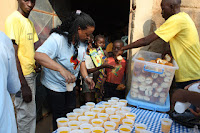
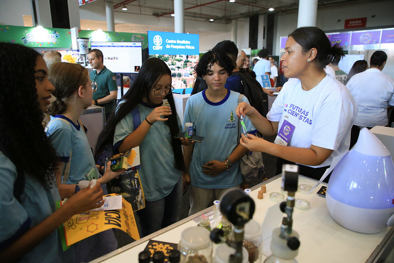
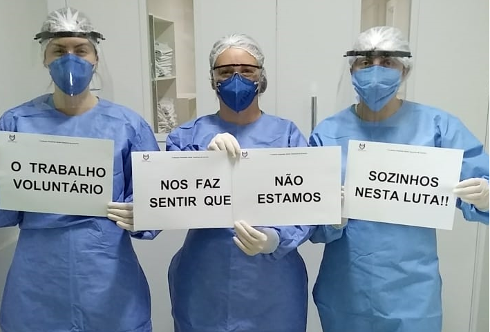

Projeto Ação de Alimentos
Arrecadamos e distribuímos alimentos, roupas e itens essenciais para famílias em situação de vulnerabilidade.
Somos uma organização dedicada a promover a inclusão social e apoiar pessoas em situação de vulnerabilidade. Desenvolvemos ações e projetos que buscam ampliar o acesso a oportunidades, fortalecer a comunidade e contribuir para uma sociedade mais justa e acolhedora.

Arrecadamos e distribuímos alimentos, roupas e itens essenciais para famílias em situação de vulnerabilidade.

Promovemos atividades educativas e oficinas gratuitas que estimulam o aprendizado e ampliam o acesso ao conhecimento, com conteúdos de tecnologia, História e Geografia.

Promovemos ações comunitárias voltadas à saúde e ao bem-estar, com campanhas de prevenção, orientação e cuidados básicos para pessoas em situação de vulnerabilidade.
Quer fazer parte das nossas ações? Existem diversas formas de contribuir com a nossa causa. Clique em "Como ajudar" no menu e preencha um breve cadastro com seus dados. Nossa equipe entrará em contato para apresentar as formas de participação e orientar você sobre como pode contribuir. Como ajudar
Entre em contato conosco para mais informações sobre nossos projetos, ações e formas de colaboração. Estamos à disposição!
E-mail: contato@ongsolidaria.org
Telefone: (11) 99999-9999
Atendimento: Segunda a sexta, das 9h às 18h.